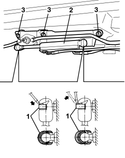
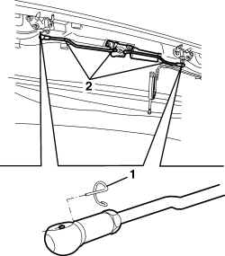

7030H45 HOOD FRONT LOCK ACTIVATING DEVICE - R.R.
- Path
- Procedures > 70 FITTINGS > 7030 SUN ROOF/GLASS PANEL > 7030H AUTOMATICALLY OPERATED HOOD > 7030H45 HOOD FRONT LOCK ACTIVATING DEVICE - R.R.
- Kind
- repair procedure (removal / refitting; the operation number is the code)
- Applies to
- engines: 2.2 JTS, 3.2 JTS; all production periods
- Interactive page
- https://sloeber94.github.io/elrnDB-aBrrSpdr/en/#/946003676
Applies to: engines: 2.2 JTS, 3.2 JTS; all production periods
 Removing
Removing
 Refitting
RefittingOp. 7030H20 HOOD FRONT PANEL - R.R.
1. Using a screwdriver, release the retaining clips from both ends of the hydraulic actuator (without removing them).
2. Move the hydraulic actuator slightly by disengaging it from the ball joints.
3. Undo the bolts securing the device.

Applies to: engines: 2.2 JTS, 3.2 JTS; all production periods
1. Remove the retainers from the link joints.
2. Remove the device complete with links.

Applies to: engines: 2.2 JTS, 3.2 JTS; all production periods
Refitting
Removing- Check that the drive device is not damaged.
- Place the device in position.
- Insert the ends of the links onto the joints and apply the retainers.
- Tighten the bolts securing the device.
- Engage the hydraulic actuator onto the ball joints and engage the retaining clips.
Op. 7030H20 HOOD FRONT PANEL - R.R.
- Check that the front hood locks hook/un-hook correctly.